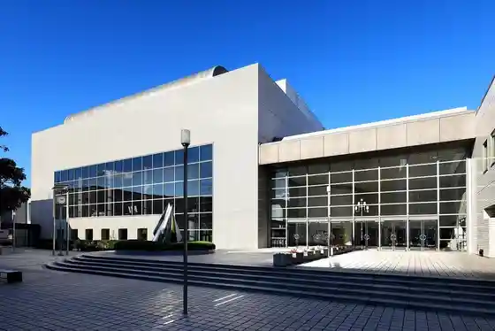
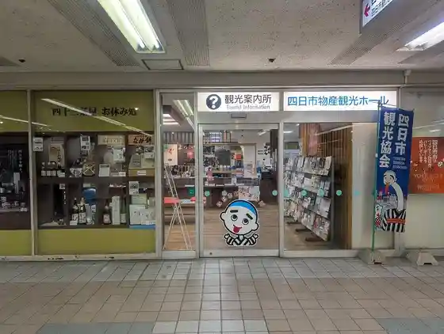
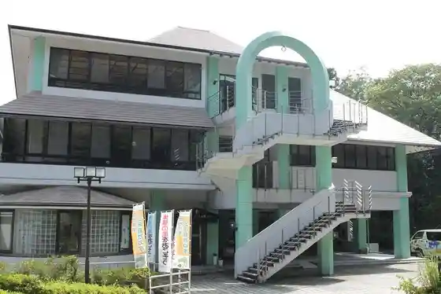
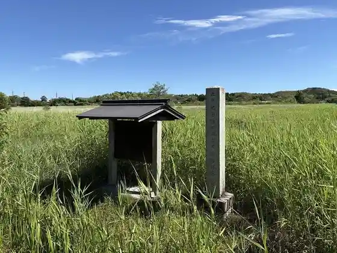

Yokkaichi Culture Hall
Yokkaichi, Mie · 059-354-4501 · Official / source link

Yokkaichi Bussan Kanko Horu
Yokkaichi, Mie · 0593-57-0381 · Official / source link

Yokkaichi Shonen Nature no Ie
Yokkaichi, Mie · 059-329-3210 · Official / source link

Oike Shotaku Shokubutsu Gunraku
Yokkaichi, Mie · 059-354-8238 · Official / source link

Rinko Hashi
Yokkaichi, Mie · 059-366-7022 · Official / source link
Chuo Green Park
Yokkaichi, Mie · 059-354-8197 · Official / source link
Yokkaichi Domu
Yokkaichi, Mie · 059-330-3131 · Official / source link
Mitaki Tenisukoto
Yokkaichi, Mie · 059-331-6261 · Official / source link
Yokkaichi Supotsu Land
Yokkaichi, Mie · 059-326-5415 · Official / source link
Isewan Mariina
Yokkaichi, Mie · 059-364-0100 · Official / source link
Kasumigaura Puru
Yokkaichi, Mie · 059-331-6182 · Official / source link
Yokkaichi Onsen Ofuro café Yumori Za
Yokkaichi, Mie · 059-332-2611 · Official / source link
Kabuse Cha Kafe
Yokkaichi, Mie · 059-329-2611 · Official / source link
Ekokarentaka Yokkaichi
Yokkaichi, Mie · 059-328-4967 · Official / source link
Yokkaichi Fureai Ranch
Yokkaichi, Mie · 059-329-3711 · Official / source link
Kyu Shi Sato Village Hall (Shi Sato Local History Museum)
Yokkaichi, Mie · Official / source link
Naka Village Seisakusho Opunfakutorii Yokkaichi Fakutoriikafe
Yokkaichi, Mie · 059-329-6777 · Official / source link
Nambu Kyuryo Park
Yokkaichi, Mie · 059-354-8197 · Official / source link
Mizusawa Momiji Tani
Yokkaichi, Mie · 059-329-2001 · Official / source link
Yokkaichi Minato Potobiru Viewpoint Tenjishitsu (Umiterasu 14)
Yokkaichi, Mie · 059-366-7022 · Official / source link
Experience Gakushu Mie Cha Nogyo Kyodokumiai Yokkaichi Cha Gyo Shinko Center
Yokkaichi, Mie · 059-329-3121 · Official / source link
Experience Gakushu Aji no Moto Tokai Kojo
Yokkaichi, Mie · 0120-170-153 · Official / source link
Higashimeihan Jidoshado EXPASA O Zaisho Kudari
Yokkaichi, Mie · 059-332-7323 · Official / source link
Higashimeihan Jidoshado EXPASA O Zaisho Nobori
Yokkaichi, Mie · 059-332-0423 · Official / source link
Utsube Town Kado Museum
Yokkaichi, Mie · 059-345-3951 · Official / source link
Sui Gatsu Kama Yama no Tobo
Yokkaichi, Mie · 059-332-8218 · Official / source link
Yokkaichi Kantsurii Kurabu
Yokkaichi, Mie · 059-337-1111 · Official / source link
Miya Tsuma Kyo Hyutte
Yokkaichi, Mie · 059-329-2237 · Official / source link
Shi Sui Iori (Chashitsu)
Yokkaichi, Mie · 059-352-4960 · Official / source link
Banko no Sato Hall (Togei Kyoshitsu)
Yokkaichi, Mie · 059-330-2020 · Official / source link
Yokkaichi Ritsu Museum Yokkaichi Kogai to Kankyo Mirai Kan
Yokkaichi, Mie · 059-355-2700 · Official / source link
Sui Saka Park Hane Tsuyama Ryokuchi
Yokkaichi, Mie · 059-354-8197 · Official / source link
Isaka Damusaikuru Park
Yokkaichi, Mie · 059-364-1546 · Official / source link
Kasumigaura Green Park
Yokkaichi, Mie · 059-354-8197 · Official / source link
Yokkaichi Kombinato Yakei Kuruzu
Yokkaichi, Mie · 059-327-5377 · Official / source link
Banko no Sato Hall
Yokkaichi, Mie · 059-330-2020 · Official / source link
Banko Shrine
Yokkaichi, Mie · 059-331-3496 · Official / source link
Denshichi Tei
Yokkaichi, Mie · 059-351-2491 · Official / source link
Yokkaichi Minato Potobiru
Yokkaichi, Mie · 059-366-7022 · Official / source link
Sangi Tetsudo Hokuseisen (Narogeji Keibintetsudo)
Yokkaichi, Mie · 059-364-2141 · Official / source link
Tomi Su Gengyo Rui Kyodo Hambaijo
Yokkaichi, Mie · 059-364-5796 · Official / source link
Yoshizaki Coast
Yokkaichi, Mie · 059-398-3111 · Official / source link
Tsue Sho Saka
Yokkaichi, Mie · 059-357-0381 · Official / source link
Hinaga no Oiwake
Yokkaichi, Mie · 059-354-8240 · Official / source link
Miya Tsuma Kyo
Yokkaichi, Mie · 059-354-8176 · Official / source link
Yokkaichi Kyuko Kowan Shisetsu
Yokkaichi, Mie · 059-354-8240 · Official / source link
Suehiro Kyoryo (Kyu Yokkaichi Minato Eki Tetsudo Hashi)
Yokkaichi, Mie · 059-354-8240 · Official / source link
Nishi A Kurakawa Ainashi Jisei Chi
Yokkaichi, Mie · 059-354-8176 · Official / source link
Kawashima Town no Shidekobushi Gunraku
Yokkaichi, Mie · 059-354-8176 · Official / source link
Toa Kurakawa Inunashi Jisei Chi
Yokkaichi, Mie · 059-354-8176 · Official / source link
Kofu Kama (Kofugama)
Yokkaichi, Mie · 059-331-8523 · Official / source link
Chishaku Yo Mizu
Yokkaichi, Mie · 059-326-2051 · Official / source link
Unomori Shrine
Yokkaichi, Mie · 059-354-8240 · Official / source link
Suwa Koen Koryu Kan
Yokkaichi, Mie · 059-350-8411 · Official / source link
Kusunoki Chuo Ryokuchi
Yokkaichi, Mie · 059-397-7117 · Official / source link